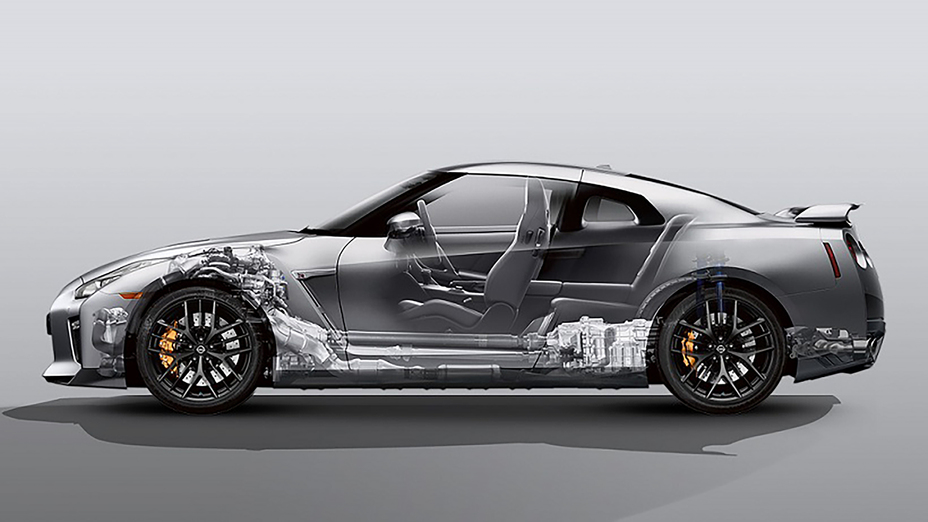
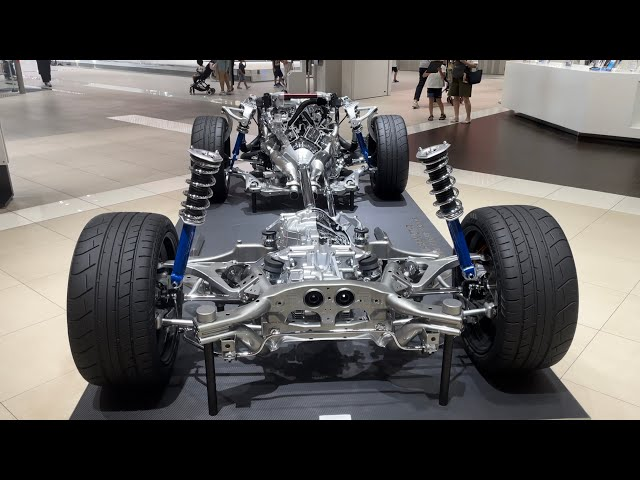

TRACCION EN EL
NISSAN GTR


LUGAR TURISTICO SAN ANDRES ISLAS
El Nissan GT-R, incluyendo el modelo GT-R R35 que estaba disponible hasta mi última actualización en septiembre de 2021, está equipado con un sistema de tracción en las cuatro ruedas (AWD, por sus siglas en inglés). Este sistema de tracción en las cuatro ruedas es una característica clave que contribuye al rendimiento excepcional y al manejo del GT-R.
El sistema de tracción en las cuatro ruedas en el GT-R es conocido como "ATTESA E-TS" (Advanced Total Traction Engineering System for All-Terrain with Electronic Torque Split).
En resumen, el sistema de tracción en las cuatro ruedas del Nissan GT-R, conocido como ATTESA E-TS, es una parte fundamental de su rendimiento y capacidad de manejo excepcionales. Le permite adaptarse a diversas condiciones de conducción y proporciona una experiencia de manejo emocionante y segura.